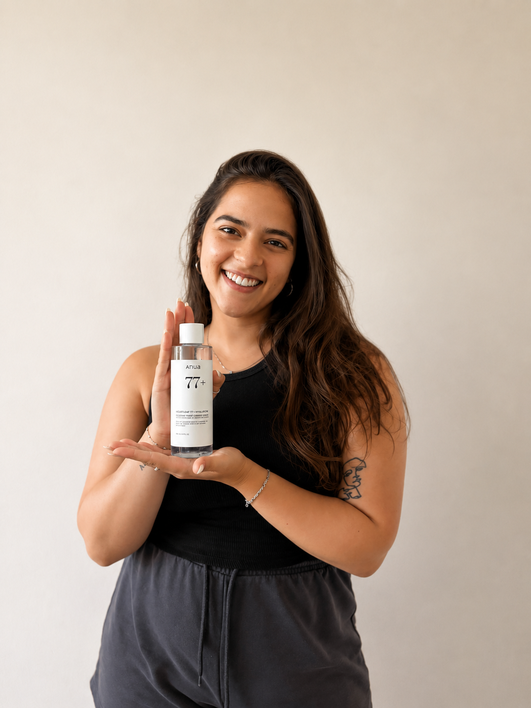
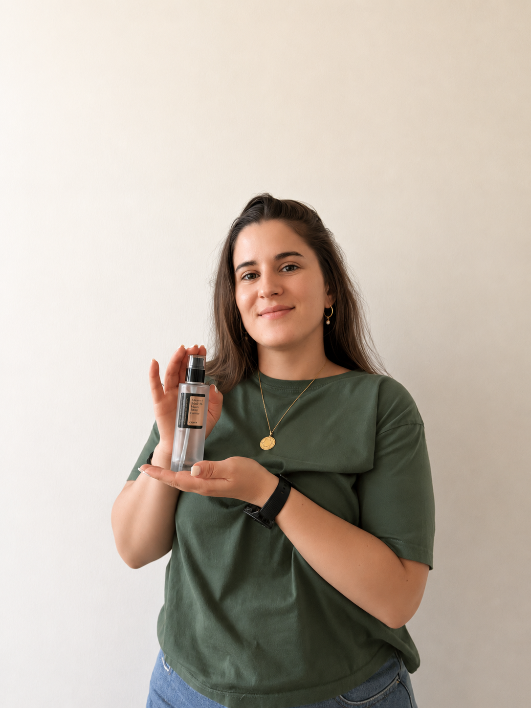

ברוכות הבאות ל-K-GLOW!
מי שאמרה לך ששגרת טיפוח חייבת לכלול המון שלבים ועלות של משכנתא – כנראה לא חוותה התפרצות אקנה שבוע לפני אירוע חשוב.
אנחנו נעה והדר. וכן, גם אנחנו היינו בלופ האינסופי של "לקנות, להתאכזב, להסתיר עם קונסילר, לא להצליח בזה ולבכות". אחרי שנים של מלחמות ואקנה תקופתי שמסרב לשחרר, הבנו שהאתגר האמיתי הוא לא העור שלנו – אלא עולם הביוטי המוצף במידע מורכב, מוצרים יקרים והבטחות שווא, שמקשים על נשים ונערות למצוא שגרה פשוטה, בריאה ונכונה עבורן.
כסטודנטיות לטכנולוגיות למידה במכון הטכנולוגי חולון HIT, אנחנו חיות ונושמות את הדרכים להפוך מידע מורכב למשהו קל, נגיש ומהנה. אז עשינו בדיוק את זה: בנינו את האתר הזה כפלטפורמה לימודית וחווייתית שתשמש כמצפן הרשמי שלכן לעור בריא וקורן. המטרה שלנו היא לעשות סדר בבלאגן, לנפץ מיתוסים ולהעניק לכן – נשים ונערות המחפשות פתרונות בגובה העיניים – כלים פרקטיים והמלצות קונקרטיות, מבוססות ניסיון, לשגרת טיפוח מנצחת שבאמת עובדת בשביל שלל סוגי העור.

הטונר של חברת ANUA המעניק לעור ניקוי, רענון ומחייה את העור.

הריר חלזונות של חברת COSRX המעניק המון לחות וזוהר לעור הפנים.
להלן העמודים שפותחו באתר:
עמוד הבית – שער הכניסה לאתר, המציג את מהות האתר ומניע לחקר סוגי העור.
עמוד אודות – עמוד שמספר על יוצרות האתר ועל הסיפור שלהן.
עמוד שגרה מותאמת לאקנה – עמוד המציג שגרה מומלצת לבעלות עור אקנתי, המפרט אילו חומרים מתאימים ועל איזו שגרה רצוי להקפיד.
עמוד SKIN1004 – עמוד המלצה על מותג אהוב.
עמוד יצירת קשר – עמוד המאפשר לגולשות לפנות אלינו באופן אישי לשאלות והתייעצות.
עבור האתר פותח גם עמוד מפת האתר
האתר פותח על ידי נעה פרידמן והדר מאיר במסגרת פרויקט לקורס "פיתוח אתרי אינטרנט" בשנה א', תשפ"ו. האתר פותח ב-HTML5 ו-CSS3.